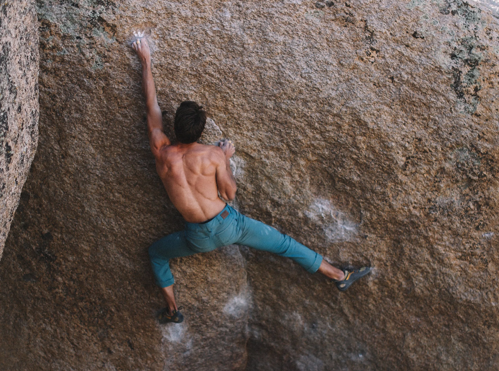
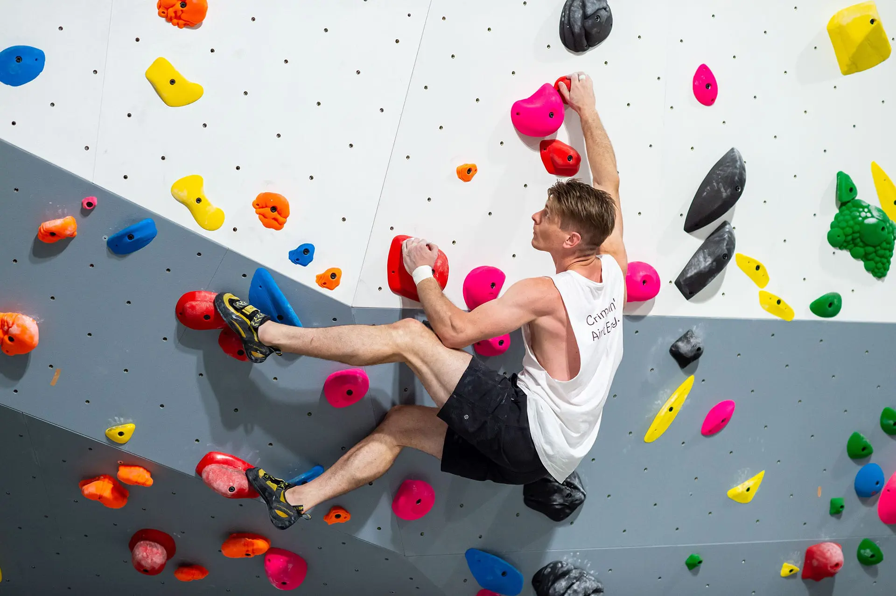

Hvað er Grjótglíma?

Grjótglíma er tegund af klettaklifri sem er stunduð á litlum klettum eða klifurveggjum án þess að nota línur eða klifurbelti. Það er alveg hægt að stunda grjótglímu án nokkurs búnaðar, en flestir klifrarar nota klifurskó til að ná betri fótfestu, kalk til að halda höndunum þurrum og fá betra grip, og dýnur til að koma í veg fyrir meiðsli við fall. Ólíkt frjálsu einklifri (e. free solo), sem er líka stundað án línu, eru grjótglímuþrautir (röð hreyfinga sem klifrarinn gerir til að klára leiðina) yfirleitt lægri en sex metrar. Hliðranir eru ein tegund þrauta þar sem klifrarinn klifrar lárétt frá einum enda til annars. Með klifurveggjum er hægt að stunda grjótglímu innandyra á stöðum þar sem enga náttúrulega steina er að finna. Keppt er í grjótglímu bæði inni og úti.

Upphaflega var íþróttin æfingaaðferð fyrir línuklifur og fjallamennsku, þar sem klifrarar gátu æft ákveðnar hreyfingar í öruggri hæð frá jörðu. Hún nýttist líka til að byggja upp úthald og auka fingrastyrk. Á 20. öldinni þróaðist grjótglíman svo í sjálfstæða grein. Hver þraut fær gráðu eftir því hversu erfið hún er. Ýmis gráðukerfi hafa verið notuð í gegnum tíðina, en í dag er yfirleitt notaður annaðhvort V-kvarðinn eða Fontainebleau-kvarðinn.